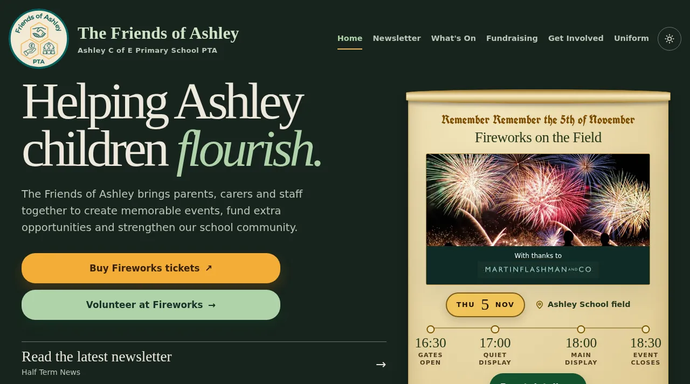
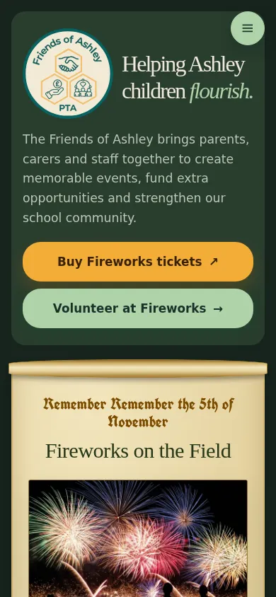

1 OF 3
Community & charity
The Friends of Ashley
thefriendsofashley.orgA primary school PTA’s whole year online: event pages for fireworks and fayres, what’s-on calendar, newsletter, fundraising and volunteer recruitment - written for parents on phones at the school gate.
Try the live site